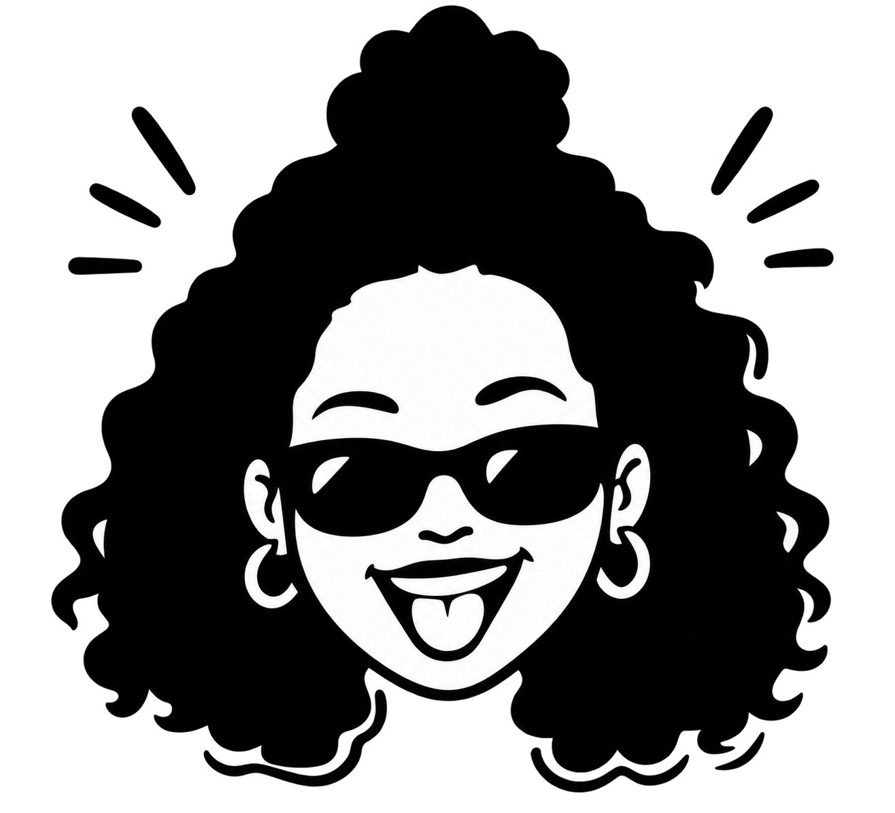

buscar por coisas
naturais se tornou
minha maior
característica
ser natural é o melhor
caminho.
UM OLHAR PRÓPRIO.
MUITAS POSSIBILIDADES.
Malu. Naturalmente criativa.
Social Media
Storymaker
Videomaker Móbile
Naturalmentecriativa.
Painel de referências para a marca:
O que
eu faço
Referências visuais do manual da marca · autoria de terceiroseu faço
Naturalmente criativa
Crio uns vídeos aí...
e te ajudo com sua imagem.
Várias skins’
ama curtir, isso não tira a responsabilidade.
só faz cada trabalho ter a melhor energia possível.
NATURALIDADE
SE TORNOU
SUA MARCA.
limão, laranja
e um pouco de
barro é o que precisamos
para achar equilíbrio.
Humor, energia,
& muita vontade
de fazer
acontecer

Templates
sua marca
pessoal
pessoal
geral
seu cliente
Não tenha vergonha
de aparecer.
tenha medo de
ser esquecido.
Poste algo hoje.
Amanhã você vai
me agradecer
por ter se movido.
portfolio
naturalmente criativa
Conteúdo, bastidor, vídeo...
Tudo que você pode ter com energia boa de quem faz
acontecer.
Crio uns conteúdos aí...
e te ajudo com sua imagem.
Gestão
Planejamento, criação, organização e publicação para manter sua marca ativa.
Vídeos e fotos
Captação pensada para Reels, stories, fotos de marca e materiais de campanha.
Storymaker
Cobertura espontânea e estratégica de bastidores, eventos e experiências.
Rosto da marca
Presença em vídeos e fotos para humanizar campanhas e produtos.
Direção
Ideias, roteiros, formatos e estética para sua marca não postar só por postar.
Gestão de
conteúdos
Sua marca presente, mesmo
quando a rotina aperta.
planejamento editorial
ideias de pauta
legendas
direção visual
calendário
publicação
acompanhamento básico
Storymaker
evento bom não fica só na galeria
Cobertura com energia de quem está
vivendo o momento: bastidores, detalhes,
pessoas, atmosfera e movimento em
conteúdo para stories, reels e pós-evento.
Pacote Essencial
para começar com direção
Para marcas que precisam começar com frequência, clareza e presença sem transformar o digital em uma dor de cabeça.
inclui
- planejamento mensal
- calendário editorial
- legendas
- organização de pautas
- gestão básica de publicações
Pacote brand
conteúdo com mais vida
Para marcas que querem vídeo, bastidor e uma presença mais espontânea, sem perder a estratégia.
inclui
- tudo do Essencial
- captação de fotos e vídeos
- ideias para Reels
- stories planejados
- direção criativa
Pacote
sua marca com rosto
Para marcas que precisam de alguém criando, aparecendo e sustentando a imagem no digital com naturalidade.
inclui
- gestão de conteúdo
- captação
- Malu como rosto/modelo
- vídeos demonstrativos
- stories de conexão
Dá para montar
do seu jeito.
cobertura de eventosdiária de gravaçãoreels avulsossessão de fotosroteiro para vídeosconsultoriaorganização de feedcriação de stories
Além dos pacotes, a marca pode escolher reforços pontuais para
campanhas, lançamentos ou fases em que precisa aparecer mais.
Sem complicar
o que pode fluir.
- 01
briefing
entender objetivo, marca e contexto
- 02
direção
ideias, formatos, estética e intenção
- 03
captação
foto, vídeo, stories ou presença
- 04
organização
edição, legendas e calendário
- 05
publicação
conteúdo no ar com acompanhamento